class: center, middle # Unsupervised learning and Generative models Charles Ollion - Olivier Grisel .affiliations[    ] --- ## Outline ### Unsupervised learning -- ### Autoencoders -- ### Generative Adversarial Networks --- class: middle, center # Unsupervised learning --- ## Unsupervised learning Generic goal of unsupervised learning is to **find underlying structrure** in data. Specific goals include: - clustering: group similar observations together; - reducing the dimensionality for visualization; - building a better representation of data for a downstream supervised task; - learning a likelihood function, e.g. to detect anomalies; - generating new samples similar to past observations. ??? Use case for generating new data: - arts: smart synthetizers for electronic music. - entertainment: procedural games: faces & behaviors for NPCs, infinite landscapes.... - more natural UI, e.g. speech synthesis. - media compression, denoising, restoration, super-resolution. --- ## Unsupervised learning For complex data (text, image, sound, ...), there is plenty of hidden latent structure we hope to capture: - **Image data**: find low dimensional semantic representations, independent sources of variation; - **Text data**: find fixed size, dense semantic representation of data. -- Latent space might be used to help build more efficient human labeling interfaces. => Goal: reduce labeling cost via active learning. --- ## Graal of unsupervised learning A low dimension space which captures all the **variations** of data and **disentangles** the different latent factors underlying the data. .center[ 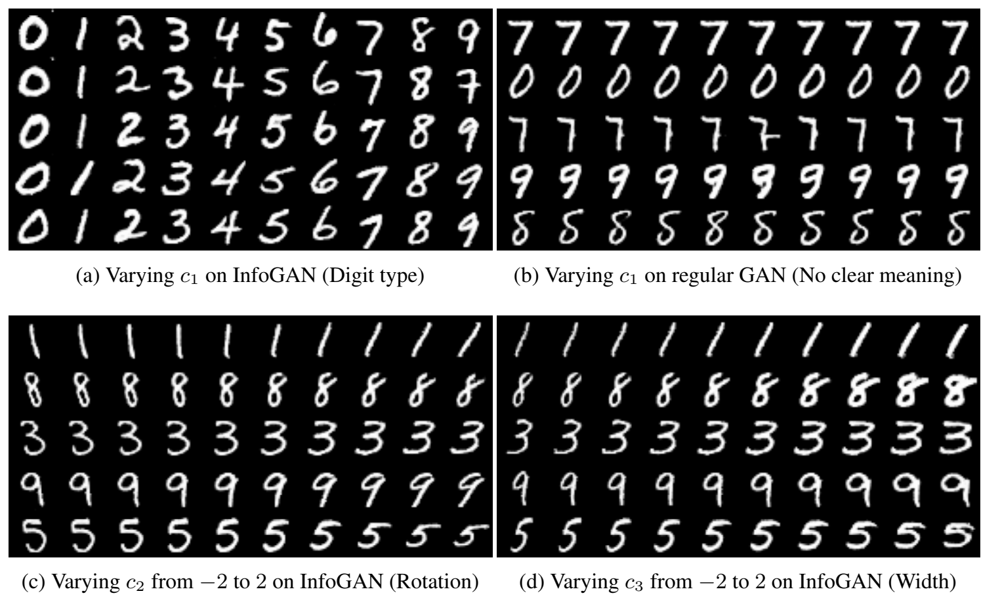 ] .footnote.small[ Chen, Xi, et al. Infogan: Interpretable representation learning by information maximizing generative adversarial nets. NIPS, 2016. ] --- ## Self-supervised learning find smart ways to **build supervision** without labels, exploiting domain knowledge and regularities -- Use **text structure** to create supervision - Word2Vec, BERT or GPT-1,2,3 (soon 4) language models -- Can we do the same for other domains? - **Image:** exploit spatial context of an object - **Sound, video:** exploit temporal context -- No direct **accuracy** measure: usually tested through a downstream task --- ## Self-supervised learning .center[ <img src="images/gupta1.png" style="width: 380px;" /> ] .footnote.small[ Doersch, Carl, Abhinav Gupta, and Alexei A. Efros. "Unsupervised visual representation learning by context prediction." ICCV 2015. ] -- - Predict patches arrangement in images: 8 class classifier - Siamese architecture for the two patches + concat --- ## Self-supervised learning .center[ 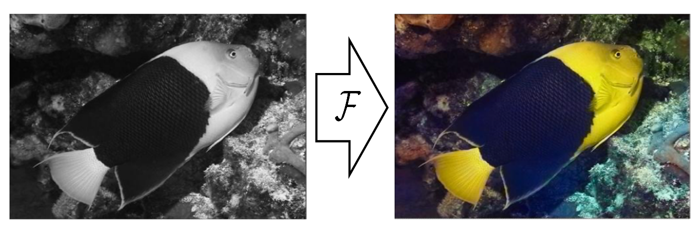 ] .footnote.small[ Zhang et al. "Colorful Image Colorization" ECCV 2016 ] -- - Given RGB images, generate their grayscale version - Train a network to predict pixels color given grayscale image --- ## Self-supervised learning .center[ 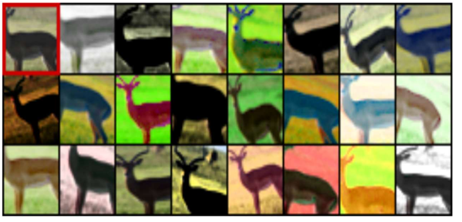 ] .footnote.small[ Dosovitskiy et al. "Exemplar Networks" 2014 ] -- - Heavy augmentation of the images - Network must predict that augmented images are similar, and another random image dissimilar --- ## Self-supervised learning .center[ 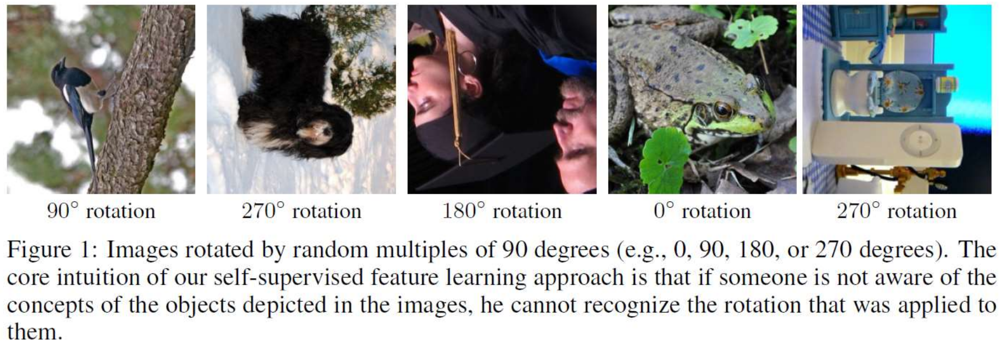 ] .footnote.small[ Spyros Gidaris, Praveer Singh, Nikos Komodakis. "Unsupervised representation learning by predicting image rotations, " ICLR 2018 ] -- - Generate 4 versions of the image, rotated by 0˚, 90˚, 180˚, and 270˚ - Network must predict the angle --- ## Self-supervision from videos .center[ <img src="images/gupta2.png" style="width: 380px;" /> ] .footnote.small[ Wang, Xiaolong, and Abhinav Gupta. "Unsupervised learning of visual representations using videos." ICCV 2015. ] -- - Collect pairs of similar objects from videos -- - Train a siamese net with positive pairs = similar objects detected -- - Hard pairs mining: find objects with large movement --- ## Self-supervised learning for language .center[ 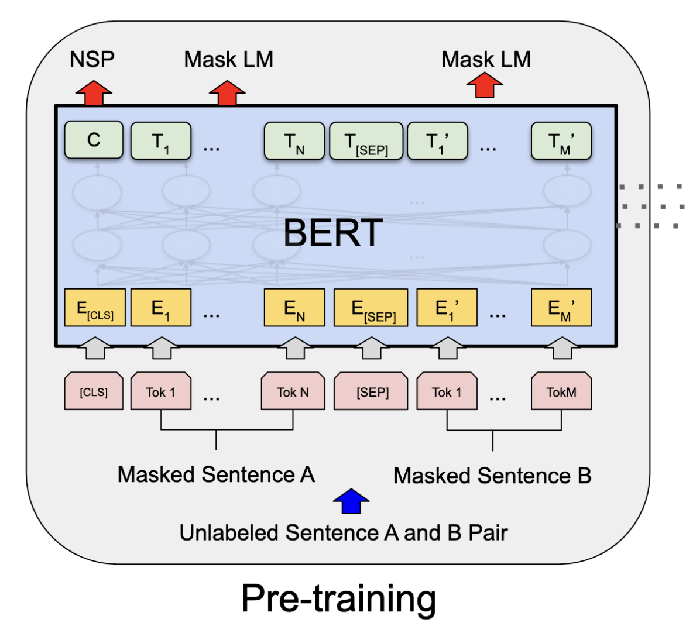 ] .footnote.small[ [BERT: Pre-training of Deep Bidirectional Transformers for Language Understanding]( https://arxiv.org/abs/1810.04805 ) Jacob Devlin, Ming-Wei Chang, Kenton Lee, Kristina Toutanova ] --- ## Self-supervised learning for any modality .center[ 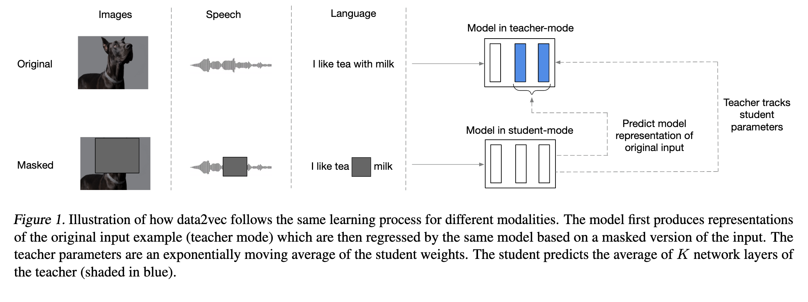 ] .footnote.small[ [data2vec: A General Framework for Self-supervised Learning in Speech, Vision and Language]( https://arxiv.org/abs/2202.03555 ) Alexei Baevski, Wei-Ning Hsu, Qiantong Xu, Arun Babu, Jiatao Gu, Michael Auli ] --- class: middle, center # Autoencoders --- ## Autoencoder .center[ <img src="images/autoencoder.png" style="width: 420px;" /> ] -- Supervision : reconstruction loss of the input, usually: $$l(x, f(x)) = || f(x) - x ||^2_2$$ -- **Binary crossentropy** is also used --- ## Autoencoder .center[ <img src="images/autoencoder.png" style="width: 420px;" /> ] Keeping the **latent code** $\mathbf{z}$ low-dimensional forces the network to learn a "smart" compression of the data, not just an identity function -- Encoder and decoder can have arbritrary architecture (CNNs, RNNs...) --- ## Sparse/Denoising Autoencoder Adding a sparsity constraint on activations: $$ ||encoder(x)||_1 \sim \rho, \rho = 0.05 $$ Learns sparse features, easily interpretable -- **Denoising Autoencoder**: train features for robustness to noise. .center[ 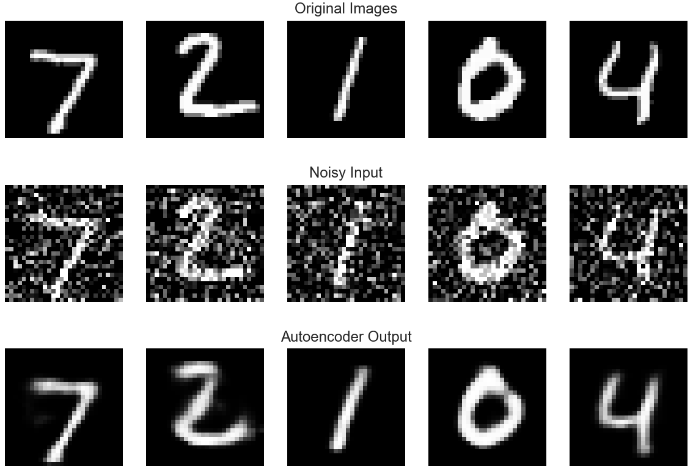 ] --- ## Uses and limitations After **pre-training** use the latent code $\mathbf{z}$ as input to a classifier instead of $\mathbf{x}$ **Semi-supervised learning** simultaneous learning of the latent code (on a large, unlabeled dataset) and the classifier (on a smaller, labeled dataset) -- Other use: Use decoder $D(x)$ as a **Generative model**: generate samples from random noise -- **Limitations :** - Direct autoencoder fails to capture good representations for complex data such as images - The generative model is usually of very poor quality (very blurry for images for instance) --- class: middle, center # Variational Autoencoders --- ## Variational Autoencoders (VAE) Assume the data samples $\mathbf{x}^{(i)}$ are generated by the model: $$ p\_{\mathbf{\theta^\*}}(\mathbf{x}, \mathbf{z}) = p\_{\mathbf{\theta^\*}}(\mathbf{z}) \cdot p\_{\mathbf{\theta^\*}}(\mathbf{x} | \mathbf{z}) $$ -- - $\mathbf{x}$ is an observed r.v. with values in $\mathbb{R}^n$; - $\mathbf{z}$ is a latent r.v. with values in $\mathbb{R}^d$; - True continuous parameters $\mathbf{\theta^\*}$ are unknown; - Estimate parameters $\theta$ from data $\mathbf{x}^{(i)}$ by maximizing the marginal likelihood (MLE): $$ p\_{\mathbf{\theta}}(\mathbf{x}) = \int{ p\_{\mathbf{\theta}}(\mathbf{z}) \cdot p\_{\mathbf{\theta}}(\mathbf{x} | \mathbf{z}) \, \mathrm{d}\mathbf{z}} $$ -- But this high dimensional integral cannot be estimated efficently. -- .footnote.small[ [Auto-Encoding Variational Bayes](https://arxiv.org/abs/1312.6114), Diederik P Kingma, Max Welling ] ??? It is also possible to do a full Bayesian estimation by setting a prior on parameters $\theta$. --- ## Variational Autoencoders (VAE) Introduce approximate (variational) posterior on the latent variable: $q\_{\phi}(\mathbf{z}|\mathbf{x})$ with continuous parameters $\phi$. -- We can rewrite the log-likelihood as: $$ log \, p\_\theta(\mathbf{x}^{(i)}) = \mathrm{D}\_{KL}(q\_{\phi}(\mathbf{z}|\mathbf{x}^{(i)})||p\_{\theta}(\mathbf{z}|\mathbf{x}^{(i)})) + \mathcal{L}(\theta, \phi; \mathbf{x}^{(i)}) $$ with: $$ \mathcal{L}(\theta, \phi; \mathbf{x}^{(i)}) = -\mathrm{D}\_{KL}(q\_{\phi}(\mathbf{z}|\mathbf{x}^{(i)})||p\_{\theta}(\mathbf{z})) + \mathbb{E}\_{q\_{\phi}(\mathbf{z}|\mathbf{x}^{(i)})} log \, p\_\theta(\mathbf{x}^{(i)}|\mathbf{z}) $$ -- - $\mathrm{D}\_{KL}(q\_{\phi}(\mathbf{z}|\mathbf{x}^{(i)})||p\_{\theta}(\mathbf{z}|\mathbf{x}^{(i)}))$ is positive but unknown. It depends on the quality of our approximation. -- - $\mathcal{L}(\theta, \phi; \mathbf{x}^{(i)})$ is a lower bound to maximize w.r.t. $\theta$ and $\phi$. --- ## Variational Autoencoders (VAE) - Assume prior distribution for latent variable $\mathbf{z}$: $$p\_\theta(\mathbf{z}) = \mathcal{N}(0, 1)$$ -- - Parametrize $p\_\theta(\mathbf{x}|\mathbf{z})$ by a neural network $f\_\theta$ (decoder): $$p\_\theta(\mathbf{x}^{(i)}|\mathbf{z}) = \mathcal{N}(f\_{\theta}(\mathbf{z}), 1)$$ -- - Parametrize $q\_\phi(\mathbf{z}|\mathbf{x}^{(i)})$ by a neural network with two heads $\mu\_\phi$ and $\sigma\_\phi$ (encoder): $$ q\_\phi(\mathbf{z}|\mathbf{x}^{(i)}) = \mathcal{N}(\mu\_\phi(\mathbf{x}^{(i)}), \sigma\_\phi(\mathbf{x}^{(i)}))$$ -- - Reparametrization trick: $$ \mathbf{z} = \mu\_\phi(\mathbf{x}^{(i)}) + \sigma\_\phi(\mathbf{x}^{(i)}) \cdot \epsilon \quad \text{with} \quad \epsilon \sim \mathcal{N(0, 1)} $$ ??? Reparametrization trick make the relationship between z and x deterministic and differentiable. Plugging everything in the lower bound objective function makes it possible to use stochastic gradient descent to optimize jointly over phi and theta by sampling a different epsilon for each x in the minibatch. --- class: middle, center 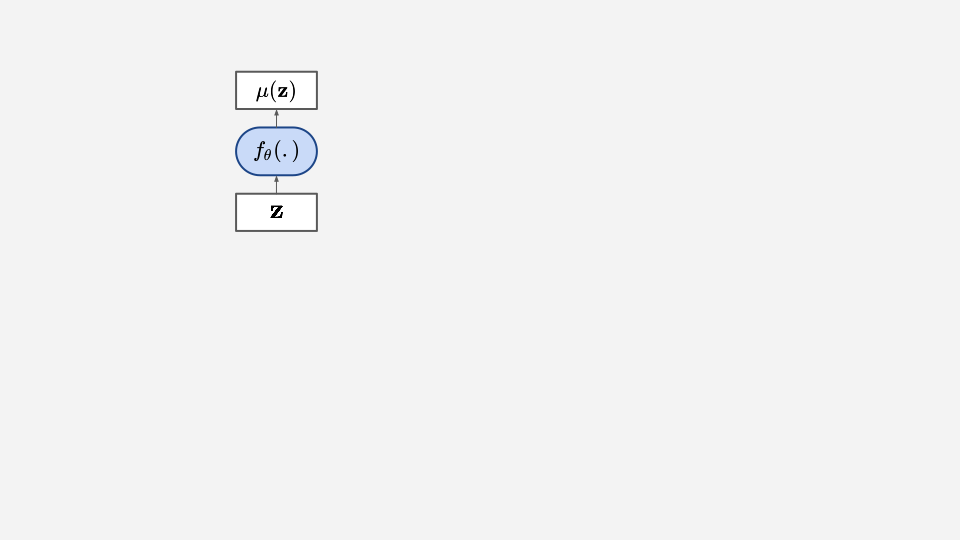 The **decoder** $f\_\theta$ defines the likelihood of data. --- class: middle, center 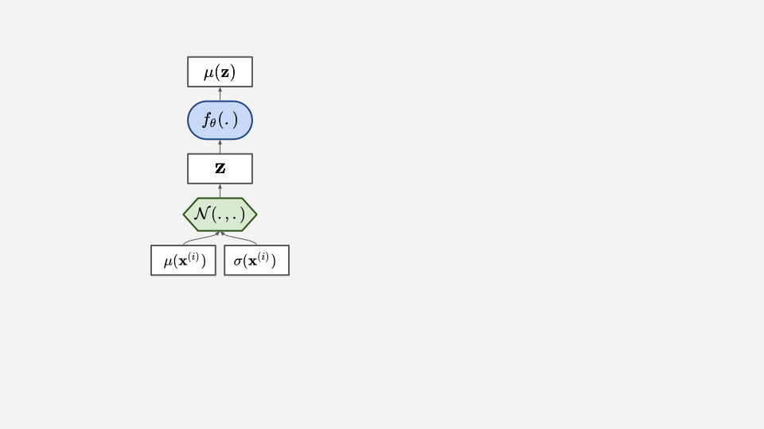 The latent variable $\mathbf{z}$ is stochastic. --- class: middle, center 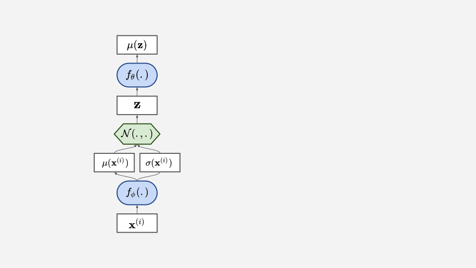 The **encoder** $f\_\phi$ defines an approximate posterior on $\mathbf{z}$. --- class: middle, center <img src="images/vae_3.svg" style="width: 700px;" /> The reparametrization makes the objective differentiable wrt. $\theta$ & $\phi$. --- ## Conv/deconv VAEs .center[ <iframe width="560" height="315" src="https://www.youtube.com/embed/XNZIN7Jh3Sg" frameborder="0" allow="autoplay; encrypted-media" allowfullscreen></iframe> ] .footnote.small[ [conv/deconv VAE](https://www.youtube.com/watch?v=XNZIN7Jh3Sg) trained by Alec Radford in 2015 on Labeled Faces in the Wild (LFW) dataset, 2h on single GTX 980] --- ## Variational Autoencoders (VAE) ### Remarks - Similar to Denoising AE but noise added to hidden layer; - Motivated by a well-defined probablistic model of the generative process; - Quite easy to train in practice. -- ### Limitations - Is the continuous parametrization of posterior latent distribution too restrictive? - Would a discrete latent variable make more sense? - Gaussian parametrization of the decoder output results in blurry images. --- ## Discrete latent variables VAE ### [Gumbel-Softmax](https://arxiv.org/abs/1611.01144) / [Concrete distribution](https://arxiv.org/abs/1611.00712) VAEs - Adapts the reparametrization trick for a discrete $\mathbf{z}$. - Trains ok but no ground breaking applications so far. -- ### [VQ-VAE](https://arxiv.org/abs/1711.00937) - $\mathbf{z}$ is a vector indexed in a trainable embedding matrix. - Select $\mathbf{z}$ as embedding vector closest to encoder output. - Approximate backprop via "gradient-copy" trick. - Very expressive model, especially when combined with strong decoders and priors. --- ## VQ-VAE imagenet results .center[ <image src="images/vqvae-imagenet.jpeg" width="700px" /> ] .small.footnote[ [Neural Discrete Representation Learning](https://arxiv.org/abs/1711.00937) Aaron van den Oord, Oriol Vinyals, Koray Kavukcuoglu ] --- ## VQ-VAE speech results Speech synth demo: https://avdnoord.github.io/homepage/vqvae/ Example reconstruction: - Original: <audio src="https://avdnoord.github.io/homepage/audio/pt1_orig3.wav" controls="controls"></audio> - Reconstructed: <audio src="https://avdnoord.github.io/homepage/audio/pt1_recon3.wav" controls="controls"></audio> Reconstruction conditionned on different speaker id: - Original: <audio src="https://avdnoord.github.io/homepage/audio/pt3_source4.wav" controls="controls"></audio> - Reconstructed: <audio src="https://avdnoord.github.io/homepage/audio/pt3_transfer4.wav" controls="controls"></audio> --- class: middle, center # Generative Adversarial Networks --- ## Generative Adversarial Networks .center[ 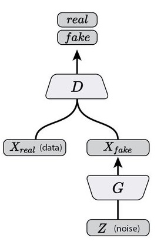 ] Alternate training of a **generative network** $G$ and a **discrimininative network** $D$ .footnote.small[ Goodfellow, Ian, et al. Generative adversarial nets. NIPS 2014. ] --- ## GANs - D tries to find out which example are generated or real - G tries to fool D into thinking its generated examples are real -- Sample real data $x \sim p_{data}$ .center[ 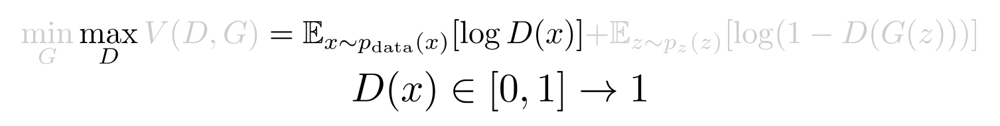 ] -- Sample $\mathbf{z}$ and generate fake data $G(\mathbf{z})$ .center[ 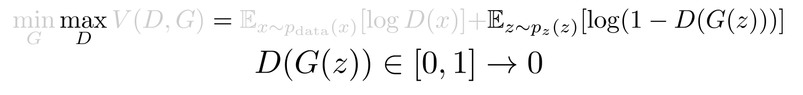 ] -- .center[ 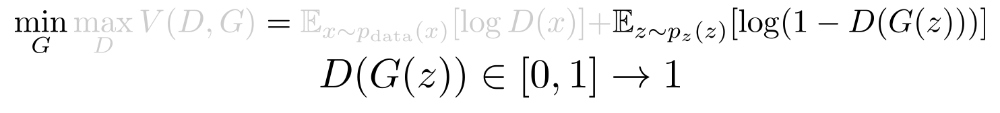 ] --- ## GANs **1D-example** .center[ 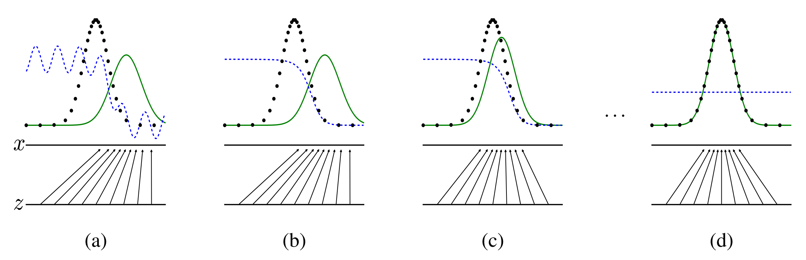 ] - optimal: $\color{blue}{D} = \frac{1}{2}$ , $\color{green}{G(\mathbf{z})} = p_{data}$ -- - $G$ never "sees" training data, it is solely updated from gradients coming from $D$ -- - Naive Keras implementation: ```python d_loss = K.mean(-K.log(Dx) - K.log(1 - DGz)) g_loss = K.mean(K.log(1 - DGz)) ``` --- ## DC-GAN .center[ 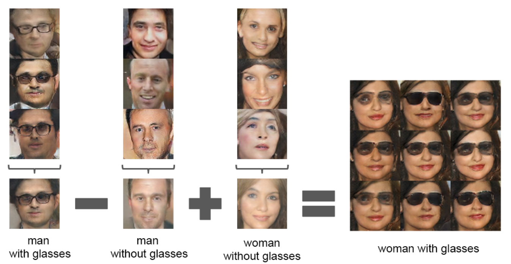 ] .footnote.small[ Radford, Alec, Luke Metz, and Soumith Chintala. Unsupervised representation learning with deep convolutional generative adversarial networks. 2015. ] - Generator generates less-blurry images than VAEs -- - Latent space has some local linar properties (vector arithmetic like with Word2Vec) --- ## Style GANs .center[ <iframe width="560" height="315" src="https://nvlabs-fi-cdn.nvidia.com/_web/stylegan3/videos/video_2_metfaces_interpolations.mp4" frameborder="0" allow="autoplay; encrypted-media" allowfullscreen></iframe> ] .footnote.small[ [A Style-Based Generator Architecture for Generative Adversarial Networks]( https://arxiv.org/abs/1812.04948) by Tero Karras, Samuli Laine, Timo Aila, 2018, and [later versions](https://nvlabs.github.io/stylegan3/) ] --- ## Pix2pix: Conditional GANs .center[ 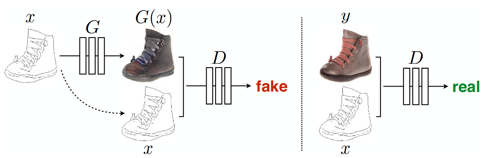 ] The generation no longer makes use of $\mathbf{z}$, rather is conditionned by an input $\mathbf{x}$ .footnote.small[ Isola, Phillip et al. Image-to-Image Translation with Conditional Adversarial Networks, CVPR 2017 ] -- .center[ <img src="images/pix2pix.jpeg" style="width: 560px;" /> ] --- ## Cycle GANs .center[ <img src="images/cyclegan.jpeg" style="width: 560px;" /> ] .footnote.small[ Jun-Yan Zhu et al. Unpaired Image-to-Image Translation using Cycle-Consistent Adversarial Networks, ICCV 2017 ] -- - No alignment between pairs needed, simply two different sets of images --- ## Super Resolution .center[ 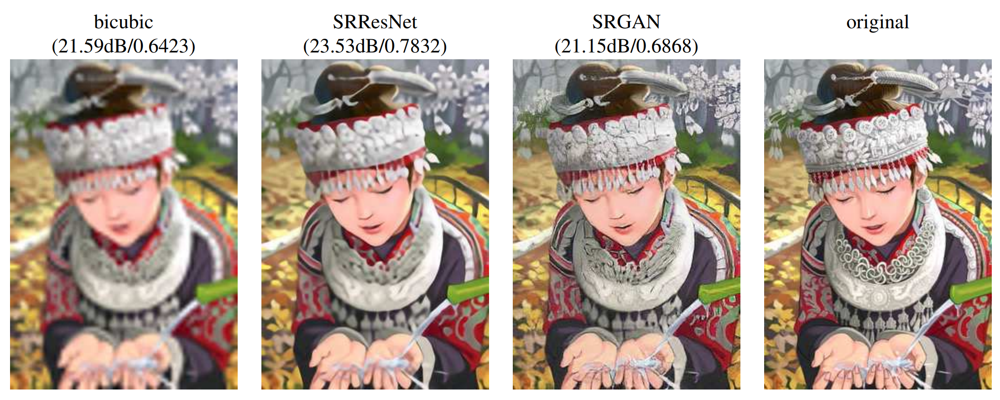 ] "Perceptual" loss = combining pixel-wise loss mse-like loss with GAN loss .footnote.small[ Ledig, Christian, et al. Photo-realistic single image super-resolution using a generative adversarial network. CVPR 2016. ] --- ## Domain Adversarial Training .center[ 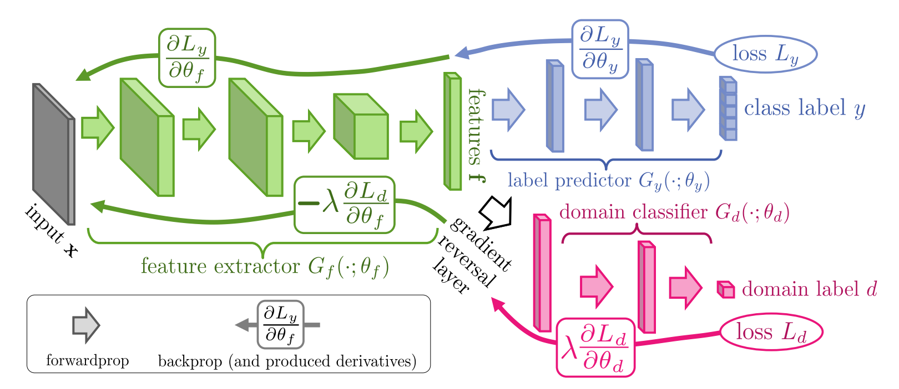 ] .footnote.small[ Ganin, Yaroslav, et al. Domain-adversarial training of neural networks. JMLR 2016. ] -- - Forces the features (green) **not** to be specialised in discriminating between domains -- - Easy to implement in TensorFlow / Pytorch with a ```GradientReversalLayer``` --- ## Domain Adversarial Training - Train **labeled** source domain + **unlabeled** target domain .center[ 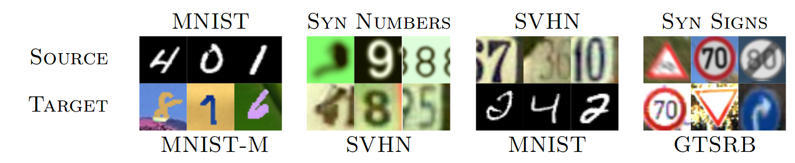 ] -- - Representation tends to be **less biased** towards the domain .center[ 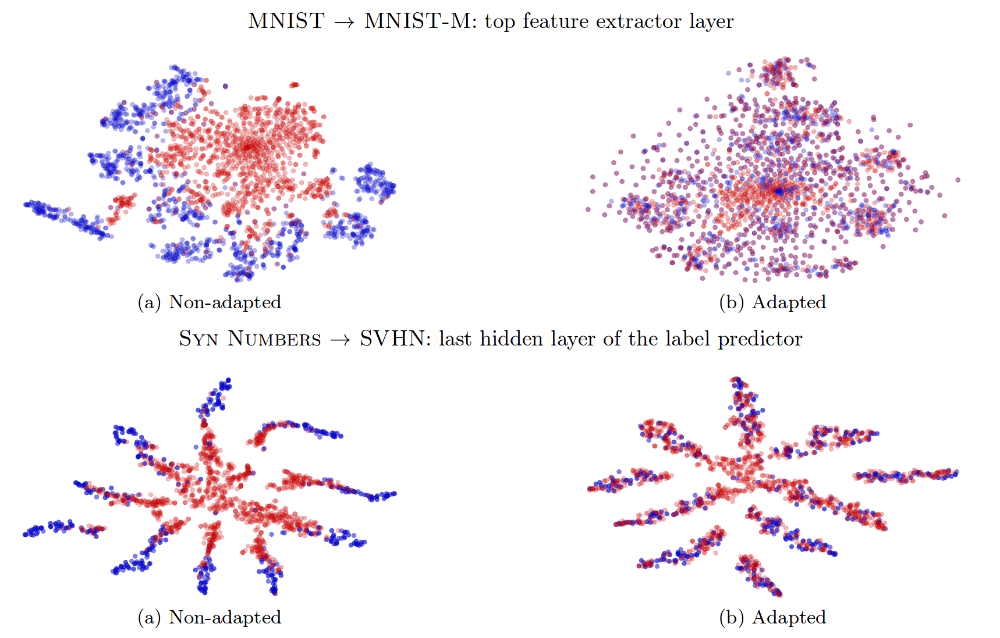 ] ??? Plenty of other techniques besides DAN, such as Domain Separation Networks --- ### Score-based matching (denoising diffusion) .center[ <img src="images/sde_schematic.jpg" style="width: 430px;" /> ] .footnote.small[ Yang Song, and S. Ermon. [Generative Modeling by Estimating Gradients of the Data Distribution](https://arxiv.org/abs/1907.05600), NeurIPS 2019.</br> Jonathan Ho, A. Jain, P. Abbeel, [Denoising Diffusion Probabilistic Models](https://arxiv.org/abs/2006.11239) ] -- Generate images by gradually denoising random noise .center[ <img src="images/denoise_vp.gif" style="width: 430px;" /> ] --- ## Takeaways ### (Reconstruction) Autoencoders - have no direct probabilistic interpretation; - are not designed to generate useful samples; - encoder defines a useful latent representation. -- ### VAEs - model explicitly (a lower bound of) the likelihood; - high quality samples from high dimensional distributions; - encoder defines a useful latent representation; - optimization problem is often well-behaved. ??? - VAE likelihood bound is not necessarily that useful in practice. - We don't know how loose is the bound. --- ## Takeaways ### GANs - likelihood-free generative models; - high quality samples from high dimensional distributions; - discriminator not meant be used as encoder; - optimization problem is trickier than for VAEs (open research). -- There exists other kinds of generative models: - auto-regressive models: PixelCNN, WaveNet, RNN language models... - can be used as prior and decoder for VAEs, generators for GANs. - flow-based models: Glow, WaveGlow... - Score-matching / denoising diffusion models. --- ## Takeaways Adversarial training is useful beyond generative models: - domain adaptation; - learning representations blind to sensitive attributes; - defend against malicious inputs (adversarial examples); - regularization by training on adversarial examples. -- Quality of samples from VAE and GAN depends a lot on the architectures of sub-networks. ??? Blindness to sensitive attributes is not necessarily the best way to tackle unfair or detrimental discrination. [Quantifying fairness is a complex topic](https://geomblog.github.io/fairness/). --- class: middle, center # Lab 10: back here in 15min!